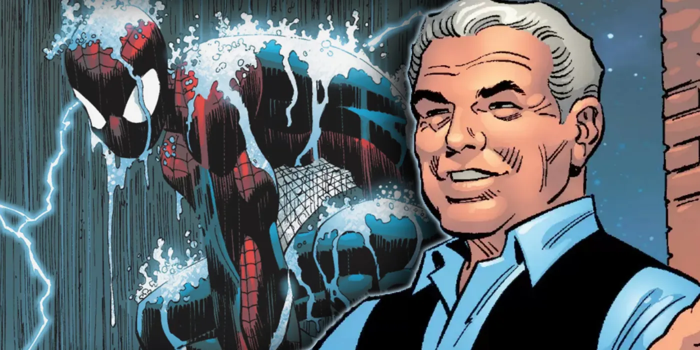

Ben was born in 1952 and was later married to May. After Peter lost his parents, Ben and May became his legal guardians. Ben was notorious for his "Parker pride", in which he would sacrifice f or others but not accept help himself. May was also guilty of this, and Ben would often use May's words against her. May once recalled that, t hrough their rough patches (something Peter noted were so rare he neve r noticed them), honesty helped them resolve their issues. Ben passed away in 2010, the year Peter became Spider-Man, and his grav estone was located at the cemetery in Harlem. His death greatly affecte d May and Peter. May often found herself wondering what Ben would have done, and his death led her to begin volunteering at F.E.A.S.T. to " find some light in the darkness". Peter worked daily to make Ben pro ud, something May said Peter had accomplished